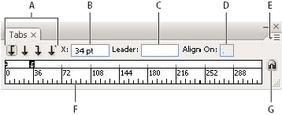
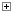

Tabs panel overview
You use the Tabs panel (Window > Type > Tabs) to set tab stops for a paragraph or type object.

Tabs panel
- A.
- Tab alignment buttons
- B.
- Tab position
- C.
- Tab leader box
- D.
- Align On box
- E.
- panel menu
- F.
- Tab ruler
- G.
- Snap panel above frame
You can access additional commands and options in the Tabs panel menu. To use this menu, click the triangle in the upper right corner of the panel.

Align the Tabs panel with a selected type object
You can position the Tabs panel anywhere in the work area; however, it is usually helpful to align the Tabs panel with a type object.
Click the magnet icon . The
Tabs panel moves directly above the selected text object, with the
zero point aligned with the left margin. If necessary, you can drag
the resize button at the lower right corner of the panel to expand
or reduce the ruler.
Snap tab stops to the ruler units
By default, you can position tab stops anywhere along the tab ruler.
Choose Snap To Unit from the panel menu or hold
down Shift as you drag a tab stop.
Change the units of measure for the tab ruler
The units of measure for the tab ruler are defined by the General units settings specified in the Units & Display Performance preferences (for all files) or by the units specified in the Document Setup dialog box (for the current file).
- To change the units of measure for all files, specify a new value for General Units in the Units & Display Performance preferences.
- To change the units of measure for the current file, specify a new units value in the Document Setup dialog box.